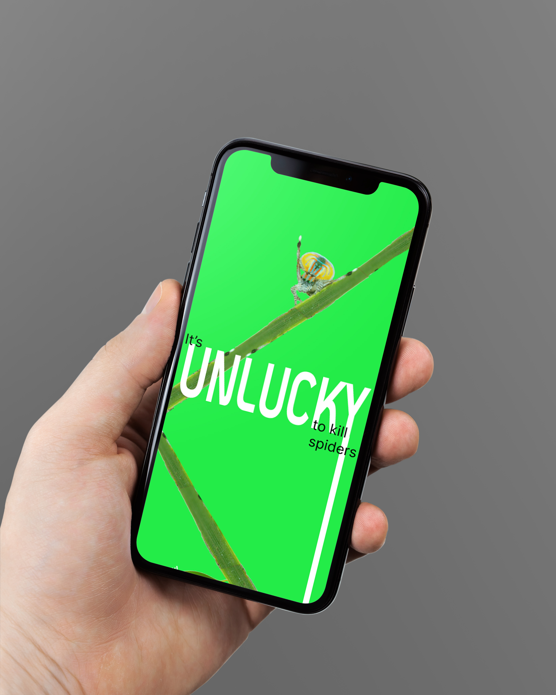
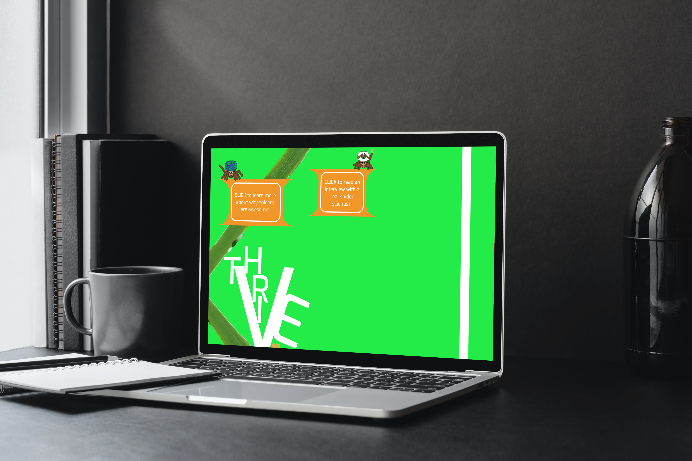
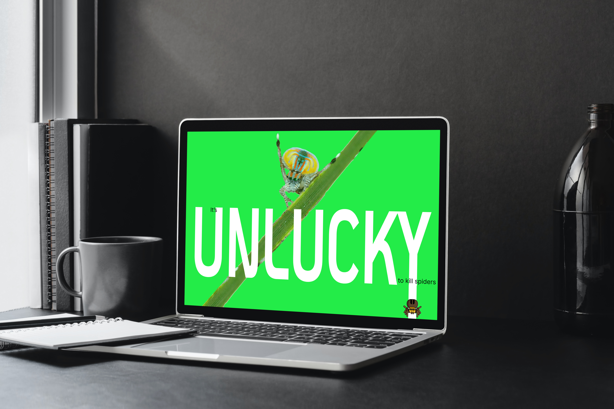

2025
Website, computer and mobile
This SPA informs users about how killing spiders is unlucky. While this message isn't true it does have real historical superstition and the spider are a crucial part of the environment. This dynamic website has a dynamic, experimental layout that invites users to keep scrolling down and learning more.


